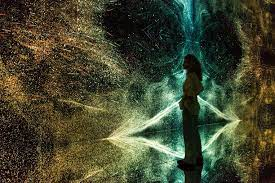

BO-opdr nxt museum

Nxt Museum is the first museum in the Netherlands dedicated to new media art.We focus on art that uses modern tools to embody modern times.We believe that the tools used in artistic expression reflect the times we live in.That makes them the perfect means to understand contemporary complexities allowing us to recognise, relate and reflect on our realities.
Its our mission to facilitate new and next iterations of creative expression. Everything we do, want and fear relates directlyto the future. It is one of the most fascinating concepts for the human mind. A thrilling source of inspiration that drives endless questions. Today, these questions are more important and complex than ever. Whats next? We dont know,but we are endlessly curious to explore together.